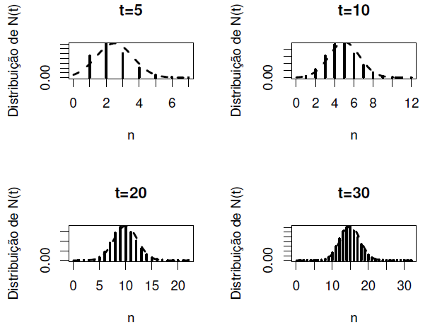

PNt <- function(n,t){
aux <- function(x) (1 / gamma(n*2) - x^2 / gamma(n*2 + 2)) * x^(2*n-1) * exp( - x)
integrate(aux,0,t)[[1]]
}3 Processos de Renovação
3.1 Definição e Propriedades
No Capítulo 2 vimos o processo de Poisson como um caso particular dentre os processos de contagem. Neste capítulo estenderemos a discussão para outras distribuições.
Considere o processo de contagem \(\{N(t),t\in \mathcal{T}\}\) e sejam \(T_1,\ldots,T_n\) variáveis aleatórias independentes e identicamente distribuídas com função de distribuição \(F\) com \(E(T_1)=\mu\).
Dizemos que \(T_i\) é o \(i\)-ésimo tempo de chegada se ele representa o tempo decorrido entre a \((i-1)\) e a \(i\)-ésima ocorrência do evento de interesse.
De modo análogo, definimos \(S_n=T_1+\cdots+T_n\) como o \(n\)-ésimo tempo de espera, ou seja, o tempo transcorrido desde de o começo do processo até a ocorrência o \(n\)-ésimo evento.
Denotaremos a função de distribuição de \(S_n\) por \(F^{(n)}\). Naturalmente, \(E(S_n)=n\mu\).
Definição
Definição 3.1 Um processo de contagem com tempos entre chegadas independentes e identicamente distribuídos é denominado Processo de Renovação (PR).
O termo renovação está relacionado com o fato de que os tempos entre as chegadas são independentes e identicamente distribuídos. Talvez seja interessante ter o seguinte exemplo em mente.
Exemplo
Exemplo 3.1 Um processo de renovação pode ser ilustrado pela ideia de se ter que trocar uma lâmpada sempre que esta queima. Supondo que a troca é instantânea e que o tempo de vida das lâmpadas é identicamente distribuído pode-se imaginar que o processo se renova cada vez que uma nova lâmpada é instalada. Neste caso, o processo \(N(t)\) estaria contando o número de lâmpadas queimadas até o tempo \(t\) (ou o número de renovações de lâmpadas).
Exemplo
Exemplo 3.2 O PP possui tempos de chegada independentes com distribuição Exponencial(\(\lambda\)) sendo, portanto, um processo de renovação.
Diferente do PP, o conjunto de índices de um PR não precisa ser contínuo.
3.2 A Distribuição de \(N(t)\)
Nesta seção, mostraremos que existe uma correspondência biunívoca entre os tempos de chegada e seu respectivo processo de contagem.
Proposição
Proposição 3.1 Não podem ocorrer infinitos eventos em um tempo finito.
Demonstração:
Suponha que infinitos eventos podem ocorrer em um tempo finito. Isto pode ser escrito da seguinte forma: existe \(t<\infty\) tal que \(S_n\leq t\) para todo \(n=0,1,2,\ldots\). Se isto fosse verdade, então \[0\leq S_n< t \Rightarrow 0\leq \frac{S_n}{n}<\frac{t}{n}.\] Fazendo \(n\rightarrow \infty\), teríamos que \(0\leq S_n/n\rightarrow 0\). Mas isso é absurdo, pois, pela Lei Forte dos Grandes Números \[\frac{S_n}{n}=\frac{T_1+\cdots +T_n}{n}\rightarrow E(T_1)=\mu>0.\] Portanto, provamos por absurdo que infinitos eventos não podem ocorrer em um tempo finito.
A proposição acima tem uma importante implicação: deve existir um valor \(n_0\) tal que \(S_{n_0}>t\). Ora, se o tempo de espera do \(n_0\)-ésimo evento é maior que \(t\), então \(S_n>t\) para qualquer \(n>n_0\). Com isto, podemos enunciar o seguinte corolário.
Corolário
Corolário 3.1 Para um PR qualquer, é verdade que \(N(t)= \max\{n:S_n\leq t\}\).
Demonstração:
Da proposição anterior sabemos que \(N(t)\) não pode ser infinito. Assim, existe o maior valor de \(n\) que satisfaz \(S_n\leq t\).
Podemos então estabelecer a seguinte relação entre \(N(t)\) e \(S_n\).
Corolário
Corolário 3.2 Para qualquer processo de renovação, \(S_n \leq t \Leftrightarrow N(t)\geq n\)
Demonstração: Se \(S_n\leq t\), então o tempo de espera do \(n\)-ésimo evento é maior ou igual a \(t\), o que implica que até o tempo \(t\) podem ter ocorrido no máximo \(n\) eventos. Portanto \(S_n \leq t \Rightarrow N(t)\geq n\). A outra implicação é análoga, sendo deixada como exercício ao leitor interessado.
Em outras palavras, temos que \(F^{(n)}(t)=P(N(t)\geq n)\). Assim, a função de distribuição de \(N(t)\) pode ser obtida via \(S_n\) e vice-e-versa. Além disso, notemos que \[\begin{align*} P(N(t)=n)&= P(n\leq N(t)< n+1) = P(N(t)< n+1) - P(N(t)< n)\\ &=\left(1-P(N(t)\geq n+1)\right) - \left(1-P(N(t)\geq )\right)\\ &=P(S_n\leq t) -P(S_{n+1}\leq t)=F^{(n)}(t)-F^{(n+1)}(t) \end{align*}\]
Exemplo
Exemplo 3.3 Considere um PR com \(T_i\sim\hbox{Gama}(\mu,1)\). Então, \[S_n=\sum_{i=1}^nT_i\sim\hbox{Gama}(n\mu,1)\] e \[\begin{align*} P(N(t)=n)&=P(S_n \leq t) -P(S_{n+1}\leq t)\\ &=\int_0^t \left( \frac{1}{\Gamma(n\mu)}-\frac{s^\mu}{\Gamma(n\mu+\mu)}\right)s^{n\mu-1}e^{-s}ds \end{align*}\]
3.3 Algumas definições e resultados
Definição
Definição 3.2 O número esperado de renovações no intervalo \((0,t]\) é dado por \[\begin{equation} m(t)=E(N(t)). \end{equation}\] e é denominado função de renovação.
Pela relação \(N(t)\geq n\Leftrightarrow S_n\leq t\), teremos que
\[\begin{equation} m(t)=E(N(t))=\sum_{n=1}^\infty P(N(t)\geq n)=\sum_{n=1}^\infty P(S_n\leq t). \end{equation}\]Podemos também avaliar o tempo médio de espera para \(S_{N(t)+1}\), conforme a proposição abaixo.
Proposição: Equação de Wald
Proposição 3.2 Para qualquer PR, \[E(S_{N(t)+1})=\mu\left(m(t)+1\right).\]
Demonstração:
Vamos utilizar o fato de que \[N(t)\geq j-1 \Leftrightarrow S_{j-1}\leq t.\] Isto é o mesmo que escrever \[\textbf{I}(N(t)\geq j-1)=\textbf{I}(S_{j-1}\leq t),\] onde \(\textbf{I}(.)\) é a função indicadora. Note que \(T_j\) é independente de \(S_{j-1}\). Portanto,
\[E\left(T_j\textbf{I}(S_{j-1}\leq t)\right)=E(T_j)E(\textbf{I}(S_{j-1}\leq t))=\mu P(S_{j-1}\leq t)=\mu\]
Assim,
\[\begin{align*} E(S_{N(t)+1})&=E(T_1)+E\left(\sum_{j=2}^{N(t)+1}T_j\right)=E(T_1)+E\left(\sum_{j=2}^{\infty}T_j\textbf{I}(N(t)+1\geq j)\right)\\ &=E(T_1)+E\left(\sum_{j=2}^{\infty}T_j\textbf{I}(S_{j-1}\leq t)\right)= E(T_1)+\sum_{j=2}^{\infty}E\left(T_j\textbf{I}(S_{j-1}\leq t)\right)\\ &=E(T_1)+E(T_1)\sum_{j=2}^\infty P(S_{j-1}\leq t)=E(T_1)\left(1+\sum_{j=1}^\infty P(S_{j}\leq t)\right)\\ &=\mu\left(1+m(t)\right) \end{align*}\]
Definição
Definição 3.3 As variáveis aleatórias \[\begin{align} \gamma_t &= S_{N(t)+1}-t,\\ \delta_t &= t- S_{N(t)},\\ \beta_t &= \gamma_t + \delta_t, \end{align}\] são denominadas, excesso de vida (ou tempo de vida residual), vida (ou idade) corrente e vida total, respectivamente.
3.4 Resultados assintóticos
O PP é o único processo de renovação no qual \(m(t)\) é uma função linear. Entretanto, para \(t\) suficientemente grande, teremos que \(m(t)\) é aproximadamente linear para qualquer PR. Este resultado é conhecido como Teorema Elementar dos Processos de Renovação1.
Teorema: Teorema Elementar
Teorema 3.1
Demonstração:
Primeiro, pela Equação de Wald, temos que \[E(S_{N(t)+1})=\mu[m(t)+1].\] Uma vez que \(E(S_{N(t)+1})\) deve ser maior ou igual a \(t\), teremos que \[\mu[m(t)+1]\geq t\Rightarrow \frac{m(t)}{t}\geq \frac{1}{\mu}-\frac{1}{t}.\]
Por outro lado, para qualquer \(a>0\) podemos definir um novo processo com os seguintes tempos entre chegadas: \[Z_{n}=\left\{\begin{array}{ll} T_n,&\hbox{ se }T_n\leq a,\\ a,&\hbox{ caso contrário }. \end{array}\right.\]
Neste caso, existe um processo de contagem \(N_a(t)\) e uma função de renovação \(m_a(t)\) associados aos tempos de chegada \(Z_{n}\), e, pela Equação de Wald, \[E(S_{N_a(t)+1,a})=\mu_a[m_a(t)+1],\] onde \(\mu_a\) é a média dos tempos entre chegadas do processo \(\{N_a(t),t\geq 0\}\). Note que, necessariamente, \[E(Z_{N_a(t)+1})< a+t\Rightarrow \mu_a[m_a(t)+1]<a+t\Rightarrow \frac{m_a(t)}{t}< \frac{a}{t\mu_a}+\frac{1}{\mu_a}-\frac{1}{t}.\] Além disso, como os tempos de espera do processo \(\{N_a(t)\}\) são menores ou iguais aos do processo \(\{N(t)\}\), teremos \[\frac{m(t)}{t}\leq \frac{m_a(t)}{t} < \frac{a}{t\mu_a}+\frac{1}{\mu_a}-\frac{1}{t}.\] Portanto, temos as seguintes desigualdades, \[\frac{1}{\mu}-\frac{1}{t}\leq \frac{m(t)}{t}\leq\frac{a}{t\mu_a}+\frac{1}{\mu_a}-\frac{1}{t}\] e fazendo \(t\rightarrow\infty,\) teremos que \[\frac{1}{\mu}\leq \frac{m(t)}{t}\leq \frac{1}{\mu_a}\] e, como \(\mu_a\rightarrow\mu\) quando \(a\rightarrow\infty,\) teremos que \[\frac{m(t)}{t}\rightarrow \frac{1}{\mu},\] quando \(t\rightarrow\infty\)
Exemplo
Exemplo 3.4 Considere um PR com tempos entre chegadas com distribuição Gama\((2,1)\). Então \(\mu = 2\) e \(S_n\sim\hbox{Gama}(2n,1)\). Teremos que \[\begin{align*} m(t)&=\sum_{n=1}^\infty P(S_n\leq t)= \sum_{n=1}^\infty \int_0^t \frac{1}{(2n-1)!}s^{2n-1}e^{-s}ds\\ &= \int_0^t \sum_{n=1}^\infty\frac{1}{(2n-1)!}s^{2n-1}e^{-s}ds, \;\;\left( \hbox{fazendo $n=k+1$,}\right)\\ &= \int_0^t \sum_{k=0}^\infty\frac{1}{(2k+1)!}s^{2k+1}e^{-s}ds\\ &=\int_0^t \frac{1}{2}(1-e^{-2s})ds=\frac{t}{2}-\frac{1}{4}+\frac{e^{-2t}}{4}, \end{align*}\] e, conforme o esperado, \(m(t)\) não é linear em \(t\). Entretanto, \[\frac{m(t)}{t}=\frac{1}{2}-\frac{1}{4t}+\frac{e^{-2t}}{4t}\rightarrow \frac{1}{2}=\frac{1}{\mu},\] quando \(t\rightarrow\infty\). Portanto, \[m(t)\approx \frac{t}{2},\] para \(t\) suficientemente grande.
Seja \(\sigma^2\) a variância dos tempos entre chegadas. Então, se \(\sigma<\infty\), pode-se mostrar que
\[\begin{equation} \frac{N(t)-t/\mu}{\sqrt{t \sigma^2/\mu^3}}\rightarrow Normal(0,1), \end{equation}\] quando \(t\rightarrow\infty\). Deste modo, podemos ao menos ter uma distribuição aproximada para o processo de contagem.
Exemplo
Exemplo 3.5 Considere um PR cujo os tempos entre chegadas possuem distribuição Gama(2,1). Então, \[E(T)=2,\;\;Var(T)=2.\] Assim, para \(t\) suficientemente grande \[N(t)\approx Normal\left( \frac{t}{2},\frac{t}{4}\right).\]
Note que a distribuição de \(N(t)\) foi obtida no Exemplo 3.3, sendo dada por \[P(N(t)=n)= \int_0^t \left( \frac{1}{\Gamma(2n)}-\frac{s^2}{\Gamma(2n+2)}\right)s^{2n-1}e^{-s}ds\]
O código abaixo mostra a implementação dessa função de probabilidade no R:
A Figura 3.1 mostra \(P(N(t)=n)\) e a respectiva aproximação para alguns valores de \(t\).

3.5 Políticas de trocas por idade
Sejam \(T_1,T_2,\ldots\) os tempos de vida de itens (como lâmpadas) que são sucessivamente substituídos. Sabemos pelo Teorema Elementar da Renovação que os itens vão falhar com taxa \(1/\mu\) por unidade de tempo.
Contudo, pode existir um custo em esperar que o item falhe. Nestes casos, adota-se uma política de trocas por idade, que consiste em trocar o item se ele falhar ou se atingir a idade \(k\).
Em uma política de trocas por idade os tempos entre renovações tem distribuição
\[F_k(t)=\left\{\begin{array}{ll} F(x),&\;\;se\;\;x< k,\\ 1,&\;\;\hbox{caso contrário.} \end{array}\right.\]
Neste caso, a média dos tempos entre renovações com a política será2
\[\mu_k=\int_0^\infty [1-F_k(x)]dx=\int_0^k [1-F(x)]dx<\mu\]
Considerando um processo com política de trocas, sejam \(Y_1,Y_2,\ldots,\) o tempo decorridos entre falhas. Fazendo \(Z\) ser o número de vezes que houveram trocas por idade antes de uma falha e \(U_i\) o tempo de falha que ocorre antes de \(k\), teremos que \(Y_i = Zk + U_i\). Como \[\begin{align*} P(Z=z)&=P(\{\hbox{z substituições por idade antes de uma falha}\})\\ &=P(T_1\leq z)P(T_1>k)^z,\;\;z=0,1,2,\ldots, \end{align*}\] e \[\begin{align*} F_U(u)=P(U_i\leq u)=\left\{\begin{array}{ll}\frac{F(u)}{F(k)},&\hbox{ se $0<u<k,$},\\ 0,&\hbox{ caso contrário} \end{array}\right. \end{align*}\] teremos que \[\begin{align*} E(Y_i)&=E(kZ + U_i)=k\frac{P(T_1>k)}{F(k)} +E(U_i) =k\frac{P(T_1>k)}{F(k)} + \int_0^k 1-F_U(u)du\\ &=k\frac{P(T_1>k)}{F(k)}+\int_0^k 1-\frac{F(u)}{F(k)}du=\frac{1}{F(k)}\left[kP(T_1>k)+\int_0^k F(k)-F(u)du\right]\\ &=\frac{1}{F(k)}\left[kP(T_1>k)+\int_0^k (F(k)-1)+1-F(u)du\right]\\ &=\frac{1}{F(k)}\left[kP(T_1>k)-kP(T_1<k)+\int_0^k 1-F(u)du\right]=\frac{\mu_k}{F(k)}. \end{align*}\] Portanto, os itens são substituídos por falha a uma taxa de \(F(k)/\mu_k\) por unidade de tempo.
Agora, suponha que o custo de substituir um item por idade é \(c_1\) e o custo para substituir um item que falhou é \(c_2\) (em geral, \(c_2>c_1\)). Então, o custo médio total pode ser escrito como
\[C(k)=\frac{c_1}{\mu_k}+\frac{c_2F(k)}{\mu_k}=\frac{c_1+c_2F(k)}{\mu_k}.\]
Deste modo, podemos encontrar qual é a idade \(k\) necessária para que a política de troca por idade tenha custo médio mínimo.
Exemplo
Exemplo 3.6 Considere um PR com os tempos de falha com distribuição Uniforme(0,1). Considere ainda que o custo de se trocar o item ainda funcionando é de $1 e de trocar após uma falha é $2. Vamos determinar o tempo ótimo para realizar a troca. A função de custo médio será
\[C(k)=\frac{1+2k}{\int_0^k (1-x)dx}=2\frac{1+2k}{k-k^2}.\]
Derivando a função acima em \(k\), podemos mostrar que \(k=1/3\) é um ponto de mínimo global. Portanto, o custo médio é minimizado utilizando a política de trocar se o item queimar ou se seu tempo de vida passar de 1/3.
3.6 Exercícios
Exercício 3.1 Considere um PR com tempos entre chegadas com distribuição \[P(T_i=t)=\theta^t(1-\theta)^{1-t},\] com \(t=0,1\) e \(\theta\in(0,1)\). \begin{enumerate}[a)] a. Encontre \(P(S_n=s)\) e mostre que \[P(N(t)=n)=\sum_{s=0}^tP(S_n=s)\left[\frac{(n+1)\theta -s}{n+1-s}\right]\]. b. Mostre que \(m(t)=(t+1)\theta^{-1}\).
Exercício 3.2 Verifique a seguinte equivalência: \[\gamma_t>x\Leftrightarrow N(t+x)-N(t)=0.\]
Exercício 3.3 Considere um PR onde \(T_i\) é uma variável aleatória contínua. Mostre que \[P(N(t)=n)=\int_0^t P(T_{n+2}>t-s)f_{S_n}(s)ds,\] onde \(f_{S_n}\) é a função densidade de \(S_n\).
Exercício 3.4 Prove que a média do excesso de vida é dada por \[E(\gamma_t)=\mu(1+m(t))-t.\]
Exercício 3.5 Prove que \[P(\delta_t\leq x,\gamma_t>y)=P(N(y+t)=N(t-x))=1-F(x+y)\]
Exercício 3.6 Considere um PR com tempos entre renovações dado por \(f(x)=2x,\) com \(x\in(0,1)\). Encontre uma distribuição aproximada para \(N(t)\) quando \(t\rightarrow\infty\).
Exercício 3.7 O tempo de vida de certo aparelho é dado por \(f(x)=2x,\) com \(x\in(0,1)\) (tempo em anos). O custo para substituir o aparelho ainda funcionando por um novo é de R$500,00. Entretanto, o custo para substituir um aparelho com defeito por é de R$1.000. Encontre uma política de troca por idade que minimize o custo médio das renovações.